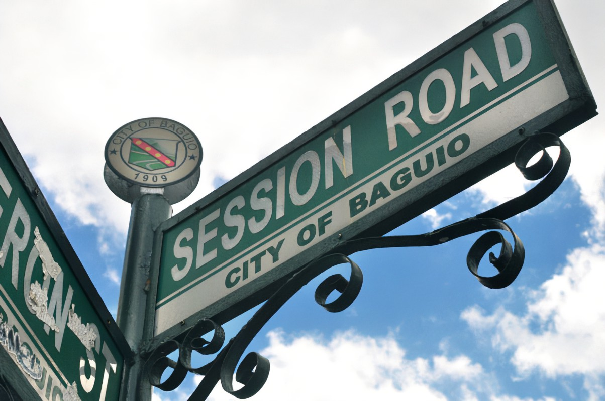
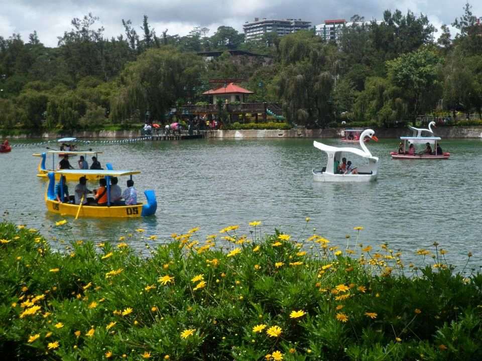

Day 1: Exploring Baguio City - Session Road
Date: January 20, 2023

Today was an amazing day exploring the streets of Baguio City...
Day 2: Exploring Baguio City - Burnharm Park
Date: January 21, 2023

Today was an amazing day exploring the Burnharm Park...
Day 3: Exploring Baguio City - The Mansion
Date: January 22, 2023
Today was an amazing day exploring the streets of The Mansion...